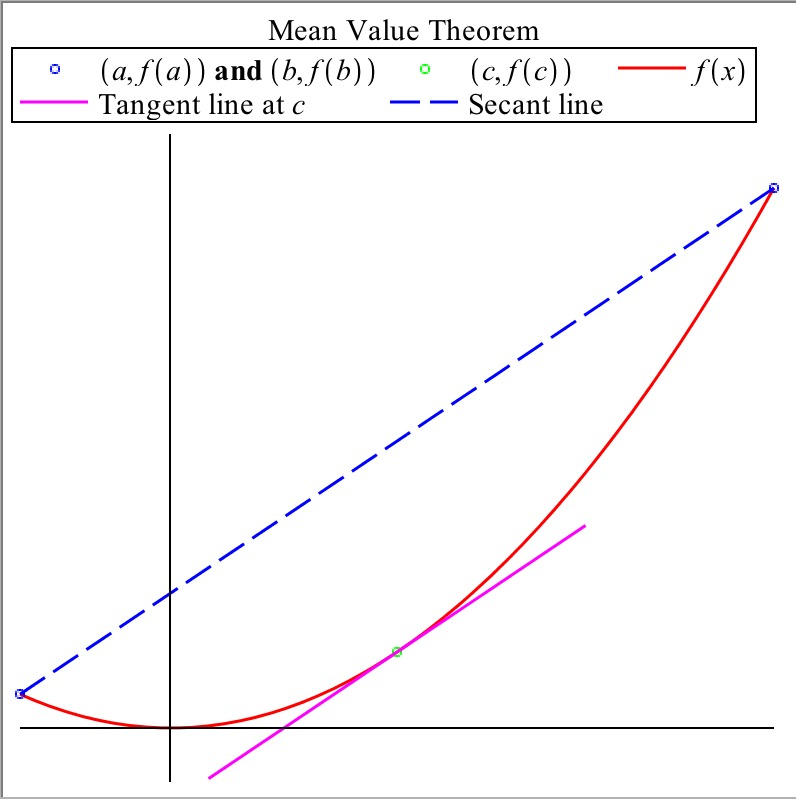

Introduction
-
Dylan
- I don’t know about this theorem...it seems pretty mean...
-
Julia
- No no, they mean mean as in average!
-
Dylan
- Oh, so were looking at the average value of a function?
-
James
- Not quite, actually the mean value theorem states the following: If
is continuous on and differentiable on , then there exists at least one
value in such that
-
Dylan and Julia
- Maybe we should do an example...that looks pretty
confusing...
-
ALTOGETHER
- Let’s dive in!
Guided Example
Take a look at the following graph illustrating the Mean Value Theorem:

What do you notice about the tangent line at c with respect to the secant line from
a to b?
What does this mean the derivative of is at ?
If was zero for all points in the interval, what could be said about on that
interval?
Use on the interval for the following questions.
Graph
What values for satisfy the mean value theorem?
On Your Own
Let .
Examine the graph, does the Mean Value Theorem apply to on the interval
?
If the theorem does apply, for what value of is the theorem satisfied?
Consider .
Over what region does the Mean Value Theorem not apply?
Apply the Mean Value Theorem from [1, 4], determining what points experience the
same instantaneous change as the entire interval.
Seeing a police officer on the side of the road, your friend Tom slows down to 35
mph. However, once the officer pulls over someone else for speeding, Tom speeds up
to 70 mph. Half an hour and 35 miles later, Tom checks his navigation app and sees
another police officer is up ahead, slowing himself down to the legal 35 mph.
However, the police officer still pulls Tom over, saying he had been radioed by the
first officer right when Tom passed, so he could prove that Tom was going 70 mph at
some point in the last half hour. Tom is furious about the clearly faulty reasoning of
the police officer.
Thanks to the Mean Value Theorem, you know the police officer is in the right.
Using as a function of position to time, explain to Tom why the officer had a valid
reason to ticket him.
Talking to Tom, you find out that he accelerated to 70 mph in only 5 seconds after
passing the officer. Prove that at some point, Tom had an acceleration of over 25,000
.
In Summary
The
Mean Value Theorem states that for any function , if is continuous on and
differentiable on , then there exists at least one value such that
This means that there is a point such that the secant line from has the same slope
as the tangent line at . It’s important to note that this means if for all on , then is
constant on .